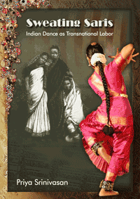

Seeing Indian dancers as gendered labor highlights the politics of Asian American racialization, migration, and citizenship
Seeing Indian dancers as gendered labor highlights the politics of Asian American racialization, migration, and citizenship


 Seeing Indian dancers as gendered labor highlights the politics of Asian American racialization, migration, and citizenship
Seeing Indian dancers as gendered labor highlights the politics of Asian American racialization, migration, and citizenship

|  |
Sweating SarisIndian Dance as Transnational LaborPriya Srinivasanpaper EAN: 978-1-43990-430-5 (ISBN: 1-43990-430-8) |
Emory Elliott Book Award, 2012
"An exciting and groundbreaking contribution to Asian American Studies, South Asian Diaspora Studies, and Performance/Dance Studies, Sweating Saris will be read with great interest by all those interested in these fields both inside and outside the academy. Srinivasan�s book is highly accessible while being theoretically rich and suggestive. It will be a significant addition to the growing body of scholarship over the past decade on the cultural politics of the South Asian diaspora. Srinivasan compellingly argues that an attention to Indian dance as a form of embodied, gendered labor radically transforms our understanding of the politics of Asian American racialization, citizenship, and migration in from the late nineteenth century to the present."
—Gayatri Gopinath, Associate Professor of Social and Cultural Analysis and Director of Gender and Sexuality Studies at NYU
A groundbreaking book that seeks to understand dance as labor, Sweating Saris examines dancers not just as aesthetic bodies but as transnational migrant workers and wage earners who negotiate citizenship and gender issues.
Srinivasan merges ethnography, history, critical race theory, performance and post-colonial studies among other disciplines to investigate the embodied experience of Indian dance. The dancers� sweat stained and soaked sari, the aching limbs are emblematic of global circulations of labor, bodies, capital, and industrial goods. Thus the sweating sari of the dancer stands in for her unrecognized labor.
Srinivasan shifts away from the usual emphasis on Indian women dancers as culture bearers of the Indian nation. She asks us to reframe the movements of late nineteenth century transnational Nautch Indian dancers to the foremother of modern dance Ruth St. Denis in the early twentieth century to contemporary teenage dancers in Southern California, proposing a transformative theory of dance, gendered-labor, and citizenship that is far-reaching.
Excerpt available at www.temple.edu/tempress
"Sweating Saris provides a thorough examination of the history of Indian dance in the U.S. with a particular focus on the dancing body and its presence in various locations. In both methodology and topic, Srinivasan contributes to the growing studies in embodiment. Her research is excellent, and her arguments are quite cogent and strong. Sweating Saris exemplifies a new direction in Asian American studies with its dancer-focused interpretation of immigration laws, citizenship, cultural nationalism, orientalism, and contemporary identities. The addition of examples from popular culture in the epilogue underscores the relevance of the book in current scholarships in dance and Asian American studies."
—Esther Kim Lee, Associate Professor, Department of Theatre, Asian American Studies Program, University of Illinois, Urbana-Champaign
"Sweating Saris takes us through the fascinating interconnections of labor, dance, and immigration. Beautifully researched and written, this book makes us think deeply about what dancing bodies mean and how they achieve their seeming perfection. Srinivasan�s blending of archival research, ethnography, and first-person narration is a tour de force."
—Josephine Lee, author of Performing Asian America and The Japan of Pure Invention
"The immense detail, the careful deployment of scholarly and personal narrative, and the dexterity of weaving history and ethnography together in Sweating Saris results in a beautiful and critical piece of scholarship for those interested in Asian American embodied practices. Srinivasan�s adept interdisciplinary study is an essential read for those exploring transnational embodied practices across historical periods and ideologies. Its most important contribution, perhaps, is its framing of Bharata Natyam and other dance forms not as staged events subject to the gaze of spectators, but rather as continuous forms of physical, intellectual, interpretive, and performative labor that contribute to the honing of (personal, national, and cultural) identity, both in the public domain and within practitioners� bodies."
—The Journal of Asian Studies
"Srinivasan�s research is ground-breaking for several reasons�. [She] make[s] astute observations on U.S. immigration policies and citizenship in the twentieth century� Perhaps the greatest significance of Srinivasan�s excavation of historical material is that it reveals the transnational flow of bodies and ideas between the U.S. and the South Asian subcontinent from the early modern period onward, and the ways in which this transnationalism disrupts previously received definitions of twentieth-century American modernism. Sweating Saris not only gives voice to those subaltern figures who featured in these transnational exchanges of labor, but through its selected dancing bodies, it also offers an incisive view of the politics of ethnic categorization within wider discourses on U.S. citizenship."
—Dance Research Journal
Preface
Acknowledgements
Introduction
1. An Invocation for Ethnohistories
2. Death, Citizenship, Law, and the Haunting of the Oriental Dancing Girl
3. Archival Her-Stories: St. Denis and the Nachwalis of Coney Island
4. Legal Failures and Other Performative Acts
5. Intermission and Costume Changes
6. Negotiating Cultural Nationalism and Minority Citizenship
7. Manufacturing of the Indian Dancer through Off-Shore Labor
Epilogue
Glossary
Endnotes
References
Index
Priya Srinivasan is an Associate Professor in Critical Dance Studies at the Department of Dance, University of California, Riverside. In 2008, she received the Gertrude Lippincott Award given by the Society of Dance History Scholars for the best English-language article published in dance studies
Asian American Studies
Music and Dance
Cultural Studies
© 2015 Temple University. All Rights Reserved. This page: http://www.temple.edu/tempress/titles/2122_reg.html.